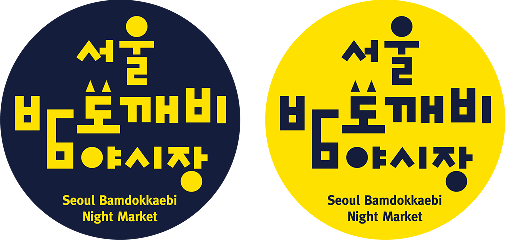
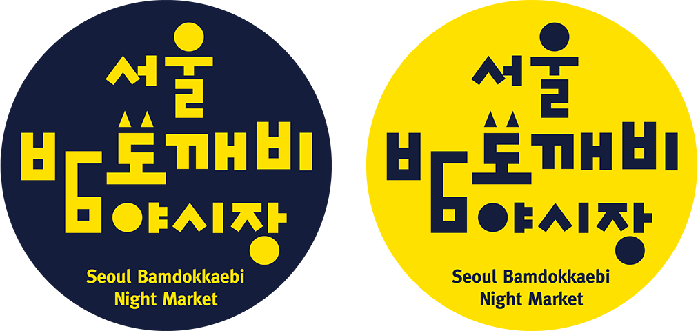

together
eatting
서울밤도깨비야시장


‘서울밤도깨비야시장’은 밤이면 열렸다가 아침이면 사라지는 도깨비 같은 시장이라는 의미로 특정한 시간이 되면 새로운 공간, 새로운 장이 열린다는 콘셉트를 가지고 있다. 한강공원 중에서는 여의도와 반포에 위치하고 있다. 특히 여의도에서 열리는 야시장은 ‘월드나이트마켓’이라는 컨셉을 가지고 아름다운 한강의 야경과 이국적인 먹거리, 각양각색의 핸드메이드 상품을 판매하는 다문화 체험시장이 준비되어 있다.